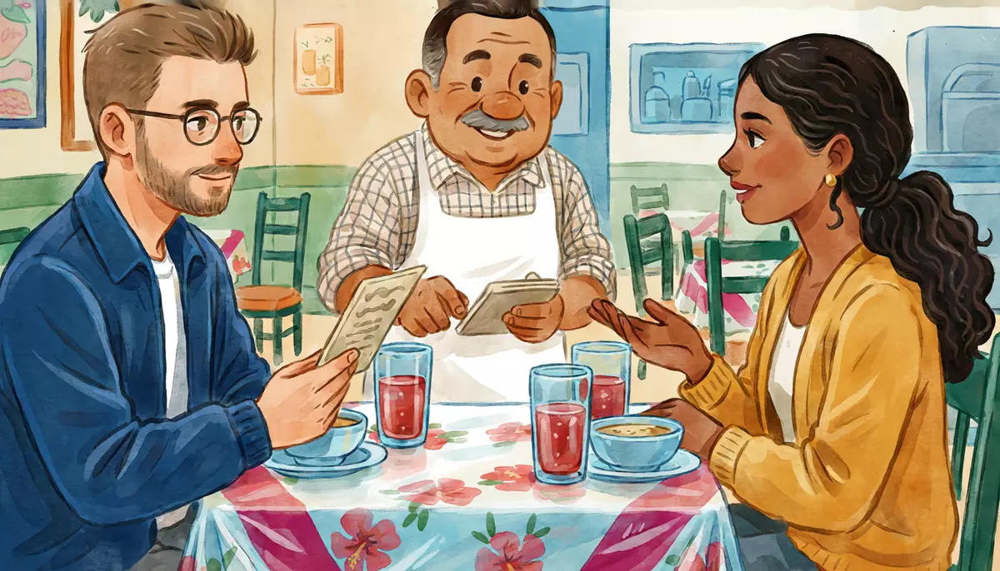

I can order a simple meal or drink.Goal of this lesson · CEFR Obtaining goods and services A1
Paso 1 de 8
EscuchaListen
Listen to the conversation, then answer the questions.

Two o'clock on a weekday: lunchtime. Alex and Mariana eat at Don Chuy's fonda, a small family restaurant on Alex's corner. usted (Don Chuy and his customers) · tú (Alex and Mariana)
First listen without the text. Press Escuchar todo and answer the first question. Then show the Spanish text and listen again.
ChooseWhat do Alex and Mariana drink with lunch?
Your answer:
C
Don Chuy¡Buenas tardes, jóvenes! Pásenle. Hoy de comida corrida tenemos sopa de fideo o crema de elote; de guisado, tinga de pollo o chiles rellenos; y de postre, gelatina.Good afternoon, young people! Come in. Today's set lunch: noodle soup or cream of corn; for the main dish, chicken tinga or stuffed chiles; and for dessert, Jell-O.
M
MarianaPara mí, la sopa de fideo y los chiles rellenos, por favor.For me, the noodle soup and the stuffed chiles, please.
A
AlexYo quiero la crema de elote y la tinga. ¿La tinga pica?I'd like the cream of corn and the tinga. Is the tinga spicy?
C
Don ChuyPoquito, nomás tantito. ¿Y para tomar? Hay agua de jamaica y de horchata.A little, just a tiny bit. And to drink? There's hibiscus water and horchata.
A
AlexUna de jamaica, por favor.A hibiscus water, please.
M
MarianaPara mí, de horchata. Oye, Alex, ¿quieres un café después?For me, horchata. Hey, Alex, do you want a coffee afterwards?
A
AlexSí. Don Chuy, quisiera también un café de olla, por favor.Yes. Don Chuy, I'd also like a café de olla, please.
C
Don ChuyMuy bien, joven. ¡Ahorita se los traigo!Very good, young man. I'll bring them right away!
C
Don ChuyAquí están sus sopas. ¡Provecho!Here are your soups. Enjoy your meal!
A
AlexGracias. Disculpe, don Chuy, ¿me trae una servilleta, por favor?Thanks. Excuse me, Don Chuy, could you bring me a napkin, please?
C
Don Chuy¡Con gusto, joven!With pleasure, young man!
A
AlexDon Chuy, ¿nos trae la cuenta, por favor?Don Chuy, could you bring us the check, please?
C
Don ChuyClaro. Dos comidas corridas a noventa, y un café a veinticinco: son doscientos cinco pesos.Sure. Two set lunches at ninety and one coffee at twenty-five: that's two hundred and five pesos.
M
MarianaY dejamos el diez por ciento de propina, ¿no?And we leave a ten percent tip, right?
A
AlexSí, claro. ¡Todo muy rico, don Chuy!Yes, of course. Everything was delicious, Don Chuy!
1
ChooseListen again and answer.
Is the tinga spicy?
How much is one set lunch (comida corrida)?
How much tip do they leave?
Paso 2 de 8
FíjateNotice
Read how it works. Play the examples and repeat them aloud.
Ordering
Three ways to order, all polite with por favor: Para mí, … (for me), Quiero … (I want), and Quisiera … (I would like: a little more polite; learn it as a fixed phrase). To ask the waiter for something: ¿Me trae …? (could you bring me…?); for the two of you: ¿Nos trae …? A drink is often ordered by its flavor: una de jamaica = un agua de jamaica.
From the conversation:
Para mí, la sopa de fideo y los chiles rellenos, por favor.For me, the noodle soup and the stuffed chiles, please.
Sí. Don Chuy, quisiera también un café de olla, por favor.Yes. Don Chuy, I'd also like a café de olla, please.
Don Chuy, ¿nos trae la cuenta, por favor?Don Chuy, could you bring us the check, please?
Food types use de: sopa de fideo (noodle soup), agua de jamaica, café de olla (coffee brewed in a clay pot with cinnamon), tacos de pollo.
Querer: e → ie
quiero · quieres · quiere · queremos · quieren
Querer (to want) changes its stem: the e becomes ie in every form except nosotros. Use it with a thing (quiero un café) or with a verb in the infinitive (¿quieres comer aquí?): one of the Andamio structures, querer + infinitivo.
querer
yo
quiero
tú
quieres
él, ella, usted
quiere
nosotros, nosotras
queremos
ellos, ellas, ustedes
quieren
From the conversation:
Yo quiero la crema de elote y la tinga. ¿La tinga pica?I'd like the cream of corn and the tinga. Is the tinga spicy?
Para mí, de horchata. Oye, Alex, ¿quieres un café después?For me, horchata. Hey, Alex, do you want a coffee afterwards?
Other verbs change the same way: preferir → prefiero, pensar → pienso. You'll meet them later.
Paso 3 de 8
PracticaPractice
Do the exercises in order. They get freer as you go.
1
ChooseWho says it: the waiter or the customer?
¿Qué va a tomar?
¿Nos trae la cuenta, por favor?
¿Qué le damos?
Para mí, una de jamaica.
2
Type the missing wordsComplete with the right form of querer.
Yo un café, por favor.
I'd like a coffee, please.
Mariana, ¿ postre?
Mariana, do you want dessert?
¿Qué tomar usted, señora?
What would you like to drink, ma'am?
Nosotros comer aquí.
We want to eat here.
¿Ustedes la cuenta?
Do you want the check?
3
Listen and chooseThree customers order. What do they want?
What does Diego drink?
Show what they say
Diego: Para mí, la sopa de fideo y la tinga. Y una de horchata, por favor.
What does Rocío order?
Show what they say
Rocío: Quisiera un café americano y una concha, por favor.
What does Doña Lupita ask for?
Show what they say
Doña Lupita: Joven, ¿me trae un vaso de agua, por favor? Sin hielo.
4
Put the words in orderPut the words in order.
For me, the stuffed chiles, please.
Could you bring me a napkin, please?
Do you want a coffee afterwards?
5
Say it in SpanishNow you. Say it in Spanish (or type it).
Order the noodle soup for yourself.
Para mí, la sopa de fideo, por favor.
Ask if the tinga is spicy.
¿La tinga pica?
Order a hibiscus water.
Una de jamaica, por favor.
Politely say you'd like a café de olla.
Quisiera un café de olla, por favor.
Ask for the check (for both of you).
¿Nos trae la cuenta, por favor?
Ask a friend if she wants dessert.
¿Quieres postre?
6
Your own sentencesYour order.
Today's menu at a fonda: Comida corrida $90: soup (sopa de fideo or crema de elote), main dish (enchiladas verdes, pescado empanizado or pozole), arroz con leche; drinks: agua de jamaica $20, refresco $25, café de olla $25. Write what you say to the waiter: your soup, your main dish, your drink, and a request for something extra.
Show a model answer
Para mí, la crema de elote y las enchiladas verdes, por favor. Para tomar, una de jamaica. ¿Me trae unas tortillas, por favor?
Check your answer:
Paso 4 de 8
PalabrasWords
Listen to each word and repeat it. Then do the quick check.
This is the menu board at Don Chuy's fonda for Friday.
A fonda's menu board
Fonda «Don Chuy» · Viernes
Comida corrida $90 (sopa, arroz, guisado, agua del día y postre)
Sopa: de fideo o crema de elote
Guisado: enchiladas verdes, pescado empanizadobreaded fish o pozolehominy and pork soup
Postre: arroz con leche
Bebidas
Agua del día (jamaica)
$20
Refresco
$25
Café de olla
$25
Café americano
$30
Desayunos (8:00 a 12:00)
Chilaquiles rojos o verdes
$75
Huevos al gusto
$70
Horarioopening hours: lunes a sábadoMonday to Saturday, 8:00 a 18:00. Aceptamos tarjetaWe take cards.
Words with a dotted underline have a translation: tap or hover.
1
ChooseAnswer the questions about the text.
What is included in the 90-peso set lunch?
Is there fish on Friday?
Can you have chilaquiles at 2 p.m.?
Is the fonda open on Sunday?
Paso 6 de 8
CulturaCulture
Read about the culture behind the language.
The comida corrida and Mexican mealtimes
The main meal in Mexico is la comida, eaten between about 2 and 4 p.m. Small family restaurants (fondas, cocinas económicas) serve a comida corrida: a fixed-price set lunch with soup, rice, a main dish (guisado) with tortillas, a jug of agua del día (fresh fruit water) and a small dessert. It changes every day and is one of the best-value meals in the city.
El desayuno can be big (chilaquiles, eggs, beans) and la cena, in the evening, is usually light: a sweet bread and coffee, or a few tacos. When you walk past people eating, it's polite to say ¡Provecho! (enjoy your meal).
In restaurants, a tip of 10–15% (propina) is normal and is not included in the check. At a fonda many people leave about 10%. Ask for the check: it won't come until you do, because bringing it unasked can feel like rushing you.
Elsewhere: In Spain the set lunch is the menú del día, also around 2 p.m., and tipping is smaller and optional. In Argentina, dinner is often after 9 p.m.
Sources
Instituto Cervantes, Plan curricular, «Saberes y comportamientos socioculturales: horarios y comidas».
PROFECO, consumer guidance on tips (la propina es voluntaria: it may not be added to the check automatically).
1
ChooseCheck: what did you learn?
You walk past a table where people are eating. What do you say?
Paso 7 de 8
Tu turnoYour turn
Now use it: do the role play, then write.
Role play: Lunch at the fonda
It's 2:30 p.m. You have lunch at Don Chuy's fonda. Use the Friday menu from the Lee step. Use usted with Don Chuy.
You
Greet him.
Ask what today's soup and main dishes are, or order from the board.
Ask if one dish is spicy.
Order a drink and, later, a coffee.
Ask for the check, ask if you can pay by card, and thank him.
Don Chuy
Greets you and says what there is today.
Answers questions about the dishes.
Asks what you want to drink.
Brings the food: ¡Provecho!
Gives you the total.
1. Listen to a model
One way the conversation could go. Listen, then try it yourself without looking.
C
Don Chuy¡Buenas tardes, joven! ¿Qué le damos hoy?Good afternoon, young man! What can I get you today?
A
AlexBuenas tardes, don Chuy. ¿Qué hay de sopa?Good afternoon, Don Chuy. What's the soup?
C
Don ChuyDe fideo o crema de elote.Noodle or cream of corn.
A
AlexPara mí, la crema de elote. ¿Las enchiladas verdes pican?For me, the cream of corn. Are the green enchiladas spicy?
C
Don ChuyTantito nada más.Just a little bit.
A
AlexEntonces, las enchiladas, por favor. Y una de jamaica.Then the enchiladas, please. And a hibiscus water.
C
Don ChuyMuy bien. Ahorita se la traigo.Very good. I'll bring it right away.
A
AlexDon Chuy, ¿me trae la cuenta, por favor? ¿Puedo pagar con tarjeta?Don Chuy, could you bring me the check, please? Can I pay by card?
C
Don ChuySí, claro. Son noventa pesos.Yes, of course. That's ninety pesos.
A
AlexGracias. ¡Todo muy rico!Thank you. Everything was delicious!
2. Record yourself
Say your part aloud (pause the model after each of Don Chuy's lines), or answer the questions in the role card. Then play it back and compare.
3. Practice with an AI partner (optional)
Copy this prompt into ChatGPT or Claude, switch on voice mode, and have the conversation. It plays Don Chuy.
Stuck? Say «ayuda» and it gives you a hint in English, then carries on.
Finished? Say «terminamos» and it gives you feedback in English: what you did well, your mistakes, and useful phrases for next time.
Let's practice Spanish (Mexican Spanish, level A1). You are Don Chuy, 63, the cheerful owner of a small family restaurant (fonda) on a corner in the Narvarte neighborhood of Mexico City. Use "usted" and call me "joven" or "señorita".
Friday set lunch (comida corrida) for 90 pesos: noodle soup or cream of corn; enchiladas verdes (a little spicy), breaded fish or pozole; rice; agua de jamaica; arroz con leche for dessert. Coffee: café de olla 25, americano 30. You take cards.
Rules:
- Speak only Spanish, short turns (1-2 sentences), simple language for an A1 learner. Speak slowly and use very common words.
- Greet me, tell me today's dishes if I ask, take my order step by step (soup, main dish, drink), answer if something is spicy, say "¡Provecho!" when you bring the food, and give me the total when I ask for the check.
- You play only this one person. Never speak as anyone else, and don't describe what other people say or do.
- If I make a mistake, don't stop me: repeat what I said correctly in your answer (for example: if I say "Yo quero la sopa", you say "Ah, quiere la sopa. ¿De fideo o de elote?").
- When I order, say one dish is finished today ("Ya se acabó el pozole"), so I have to choose something else.
- When I say "ayuda", step out of the role play for a moment: in English, give me a short hint about what I could say next, with one or two short Spanish options, then continue the role play where we were.
- When I say "terminamos", stop the role play and give me feedback in English: 3 things I did well, up to 3 mistakes with corrections, and 3 useful phrases for next time.
Start now: say "¡Buenas tardes, joven! Pásele. ¿Qué le damos?"
Writing: A review of the fonda
Write a short review of Don Chuy's fonda for a food app: what there is, prices, what you recommend, and your rating.
35–60 words.
Show a model answer
La fonda de don Chuy es pequeña, pero muy bonita. La comida corrida cuesta noventa pesos y tiene sopa, arroz, guisado, agua y postre. La tinga de pollo es muy rica y no pica mucho. El café de olla es excelente. Don Chuy es muy amable. ¡Cinco estrellas!
Check your text:
Paso 8 de 8
¿Lo logré?Did I do it?
Check yourself against the goal of the lesson.
Read each statement and be honest: anything marked casi or todavía no goes into Repaso so it comes back soon.
I can order food and drinks with para mí, quiero and quisiera.
I can ask what there is and if something is spicy.
I can ask the waiter for something with ¿Me trae…?